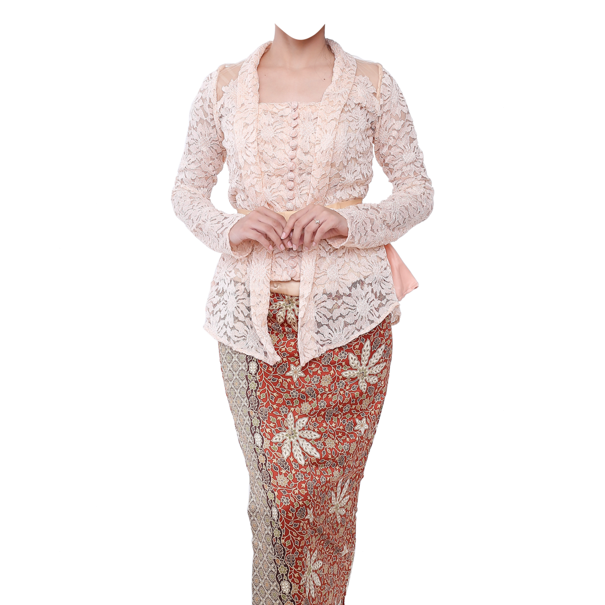

Product Catalog

Elegant Kebaya Set
A stunning Kebaya set made with luxurious silk and intricate embroidery, perfect for special occasions.
Classic Wedding Kebaya
This classic wedding Kebaya is designed with timeless elegance and delicate lace details.
Casual Day Kebaya
A more relaxed and comfortable Kebaya, perfect for daily wear while maintaining a sense of tradition.